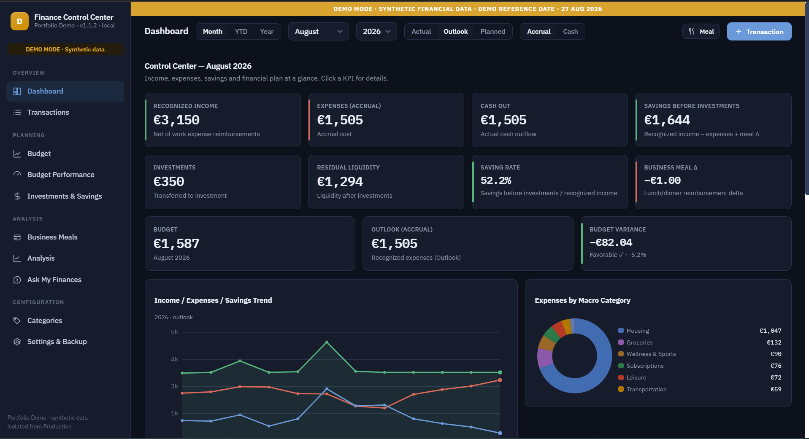
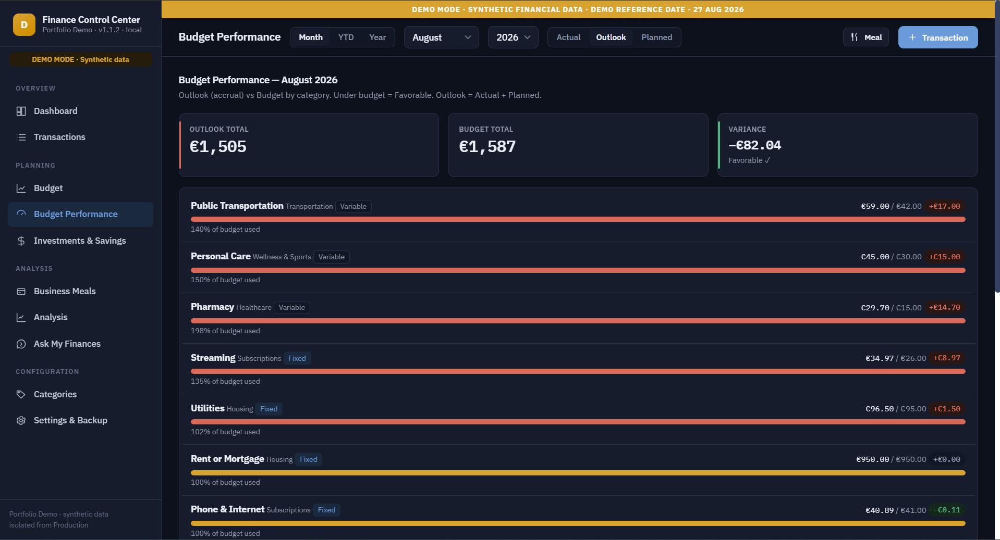
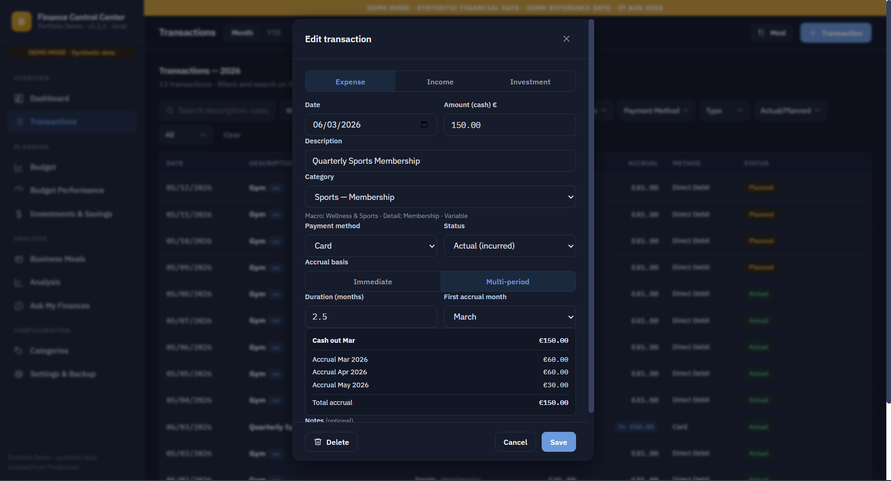
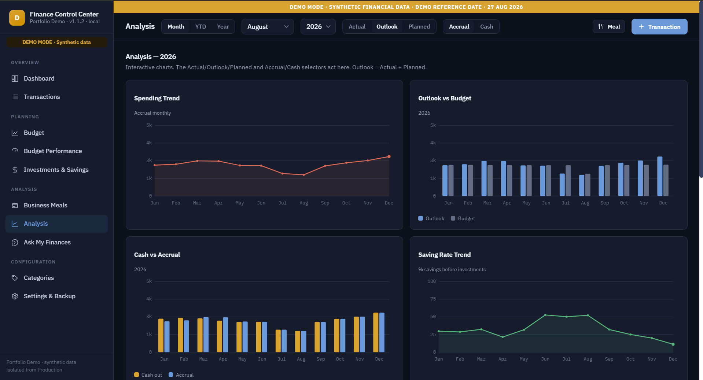
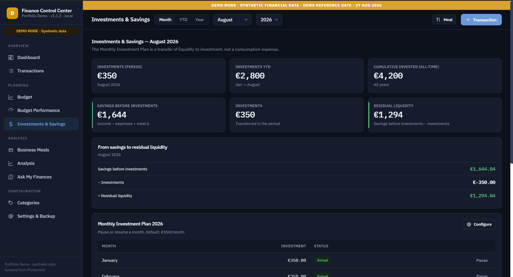
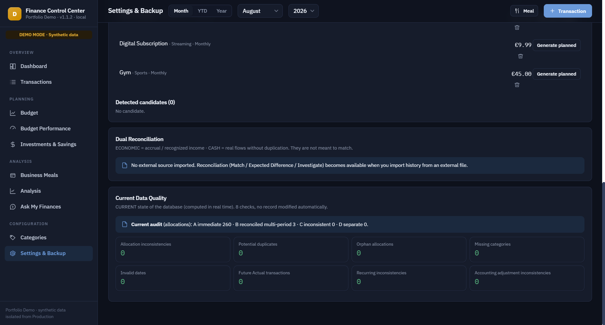

Actual vs Budget
Performance monitoring and category-level variance analysis.
AI-Assisted FP&A & Controlling Portfolio Project
From a spreadsheet-based controlling model to an interactive financial decision-support environment.
Finance Control Center is an independent portfolio project showing how a multi-sheet Excel controlling model can be translated into a structured application combining FP&A, Management Control, Business Analysis, data modelling and AI-assisted development.

The project started from a multi-sheet Excel controlling model covering transactions, Budget, expense categories, economic allocations, savings and reporting. As the underlying logic became more structured, I used the project to explore how the same management-control principles could be translated into an interactive application with explicit business rules, a structured data model and built-in validation.
The application was designed around concepts typically found in FP&A and Management Control rather than as a conventional personal-finance tracker.
Performance monitoring and category-level variance analysis.
Operational Outlook based exclusively on recorded Actuals plus explicitly scheduled Planned items.
Separation between the original cash transaction and economic recognition.
Automated allocation of costs across multiple accounting periods, including fractional periods.
Savings Before Investments, Investments, Residual Liquidity and Saving Rate.
Reconciliation checks, data-quality validation and automated regression testing.
The fixed reference date creates a genuine current-month scenario: Actual transactions are recorded through 27 August, while explicitly scheduled commitments for 28–31 August remain Planned. Combining the two provides an operational Outlook without treating known commitments as a predictive Forecast.

The model preserves the original cash transaction while allocating the expense economically across the periods it relates to.
Each allocation reconciles back to the original cash transaction, preserving traceability between Cash and Accrual views.

Monthly performance analysis highlighting spending and variance drivers.

Integrated savings and investment tracking within the monthly financial model.

A multi-sheet Excel controlling model combined transactions, Budget, allocation logic, cash movements and savings metrics. Increasing complexity created the opportunity to rethink how the same management-control logic could be structured in an interactive environment.
Preserve the analytical logic of the original model while improving usability, traceability and data consistency, without overstating a simple Actual + Planned calculation as predictive Forecasting.
Decompose the spreadsheet into business rules and data entities, define deterministic financial logic, implement iteratively through an AI-assisted workflow and validate every release against explicit acceptance criteria.
A working portfolio application combining FP&A, Management Control, Business Analysis, data modelling and AI-assisted development within a fully synthetic and testable environment.
AI accelerated implementation. Ownership of the financial logic, requirements and validation remained human-led.
The application includes deterministic controls covering allocation inconsistencies, potential duplicates, orphan allocations, invalid dates, missing categories, Future Actual transactions, recurring-item inconsistencies and accounting-adjustment inconsistencies.
The Demo can be modified during a walkthrough and then reset to its original synthetic scenario without contaminating the underlying baseline.

The public Portfolio Demo uses a fully synthetic 2026 financial dataset. No personal financial information or Production data is included, and the Demo operates in an isolated environment.
Finance Control Center demonstrates how I approach a Finance / Controlling problem: understand the business logic, structure the data, define the rules, build, validate, reconcile and iterate.